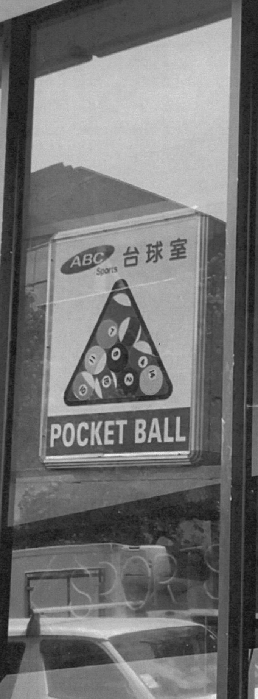

How to Install a Billboard About Publication Texts
Human beings have developed their intelligence, techniques and knowledge for the most part through their empirical abilities. Observing, experimenting, drawing conclusions, adjusting and starting over, men have built tools, have learned to master fire, to use plants and have constantly improved those systems. Scientific research is based today on a constant back and forth between experience and analysis.

About
https://howtoinstallabillboard.com is a online exploration of print that acts as a supporting outlet to the publication How to Install a Billboard.
The publication is a play on the 'Object Book' taking one common everyday object or idea and expanding on it. In this case it focuses on the idea of signs.
Videos of different sigange around Auckland City
The term 'signs' come in a range of different definitions.
x


Texts
Program where the curriculum and schedule are proposed by the general public through the school’s website. the public school for architecture brussels offers the opportunity to negotiate public space beyond the limits of current architectural practices and provides a means for the general public to access an architectural culture that is typically out of reach. the school’s mission is to create a new public for architecture while opening up architecture for the public.
x


